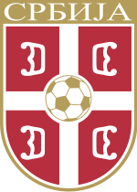

por Pedro Henrique B. N. Prado

Graças a fatores políticos, a Sérvia disputará uma Copa do Mundo pela primeira vez sozinha. Antes unida a Montenegro e um dos principais países da República da Iugoslávia até a Copa de 1990 – Croácia, Macedônia, Eslovênia e Bósnia-Hezergovina deixaram a Federação em 1992 -, agora a seleção terá a missão de surpreender com os destaques reduzidos em quantidade.
O elenco, no entanto, segue com qualidade atestada nas eliminatórias europeias. A Sérvia terminou em primeiro, à frente de França, Romênia e Áustria, e contou com destaques como o zagueiro Vidic, do Manchester United, o atacante Zigic, do Valencia, e os meias Krasic, do CSKA, e Stankovic, do Inter de Milão. Este último, inclusive, segue como o craque do time, justamente na posição de Petkovic, famoso em terras brasileiras.
Apesar do forte apelo pelo craque do Flamengo, o técnico Radomir Antic não o cogita na seleção. E ele vai com moral em alta após renovar o contrato até o fim da Eurocopa de 2012, que será disputada na Ucrânia e Polônia.